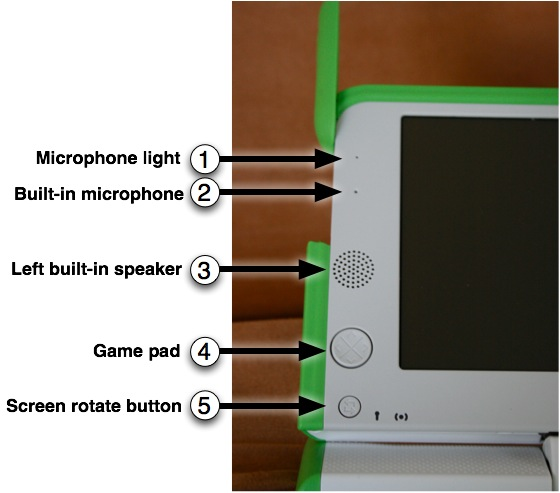
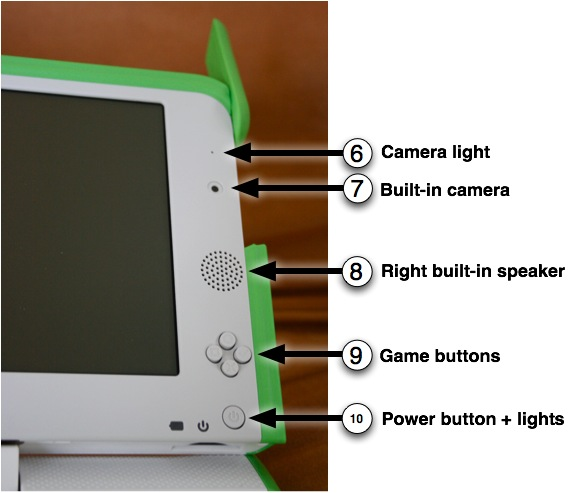
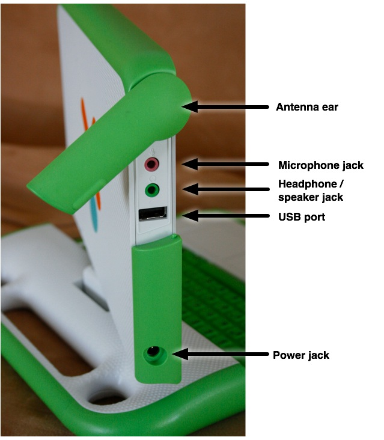

المميزات والمنافذ
جهازالكمبيوتر المحمول XO لديه العديد من الميزات. مثل الكاميرا وميكروفون ومكبرات الصوت وهوائيات لاسلكية. بالإضافة إلى ذلك ، يسمح لأجهزة الكمبيوتر المحمول بوصله بالأجهزة الخارجية الأخرى. ويتم ذلك غالبا عن طريق توصيل الأجهزة في موصلات (فتحات او منافذ).
المميزات التقنية
إضائة الشاشة الخلفية
تشتغل الشاشة في نظامين: نظام الألوان مثل باقي أجهزة الكمبيوتر المحمولة و في نظام يستهلك قدر قليل جدا من الطاقة، في دقة عالية للشاشة، في نظام شاشة بالأبيض والأسود قابل للقراءة حتى تحت أشعة الشمس المباشرة.

1, 2 - الميكروفون المدمج
يحتوي الجهاز على ميكروفون مدمج (ومقبس ميكروفون خارجي الذي يدعم مصادر AC و DC)
وللمزيد من الخصوصية، يتم إضاءة مصباح فوق مكان الميكروفون عندما يكون مشتغلا.
3, 8 - مكبرات الصوت المدمجة
مكبرات الصوت المدمجة تمكن من سماع الموسيقى، الفيديو، وكل ما تقوم بتسجيله.
كما يوجد مقبس خارجي يمكن توصيله بسماعات أو مكبر صوت خارجي.
4 - أزرار الإتجاه
يحتوي الجهاز على نوعين من أزرار التحكم يمكن استعملها في الألعاب او في التحكم في
قراءة الكتب الالكترونية عندما يتم طي الجهاز في نظام قارئ الكتب الالكترونية.
5 - زر دوران الشاشة
الزر الموجود في جانب الشاشة يقوم بتغيير اتجاه الشاشة لتمكين قرائتها من مختلف الإتجاهات.

6, 7 - الكاميرا المدمجة
يحتوي الجهاز على كاميرا مدمجة تمكن من أخذ صور وتسجيل لقطات فيديو.
وللمزيد من الخصوصية، يتم إضاءة مصباح فوق مكان الكاميرا عندما يتم تشغيلها.
9 - أزرار اللعب
يمكن استعمال أزرار اللعب عندما يتم جعل الجهاز على نظام الكتاب الالكتروني للتحكم بفعالية أكثر. الأزرار معرفة برموز: الدائرة، مربع، علامة و ×. وهذه الأزرار غالبا ماتستعمل من طرف الأنشطة. مثلا زر الدائرة يستعمل لإلتقاط الصور في نشاط التسجيل.
10 - زر الطاقة و المؤشرات
من اليسار الى اليمين: مؤشر طاقة البطارية، مؤشر البطارية، وزر الطاقة.
المنافذ
زيادة على تقديم جهاز XO لخيارات اتصال فريدة من نوعها ، يمكن لأجهزة الكمبيوتر المحمول العمل مع شريحة واسعة من الأجهزة الخارجية.

الهوائيات
عندما يتم ادارة الهوائي الى الأعلى، يتمكن XO من الحصول على مدى الإتصال أعلى من الكمبيوترات المحمولة التقليدية.كما يمكن ادارتها الى الأسفل واستعمالها كواقي لمنافذ الجهاز من الغبار.
السماعة والميكروفون الخارجيين
زيادة على مكبر الصوت والميكروفون الداخلي، يحتوي الجهاز على مقابس لمكبر الصوت وميكروفون خارجيين.
منفذ USB و الذاكرة
يحتوي الجهاز على ثلاثة منافذ USB للإتصال بمختلف الأجهزة (يظهر أحد المنافذؤ في الصورة أعلاه والمنفذ الآخر في الصورة أسفله)"
يحتوي الجهاز على كابل الطاقة قابل للإتصال بمقبس 110 الى 240 فولت AC للشحن.مقبس الطاقة تقبل أيضا طاقة DC من قبل ألواح شمسية لشحن بطارية XO.
منفذ بطاقة الذاكرة SD
يوجد منفذ أسفل الشاشة لبطاقات الذاكرة من نوع SD لتخزين صور، فيديو، وباقي البيانات.قم بإدارة الشاشة حتى يصبح الجزء الأيسر للشاشة فوق لوحة المفاتيح-يمكنك الوصول الى المنفذ في هذه الحالة في الأسفل.
البطارية القابلة للشحن
لأن العديد من الأطفال في البلدان النامية يعيشون في مناطق تفتقد للكهرباء او تحتوي على قدر قليل من الطاقة، فإن جهاز XO مصمم ليكون شديد الإقتصاد على الطاقة ويشتغل بفعالية في هذه الظروف.